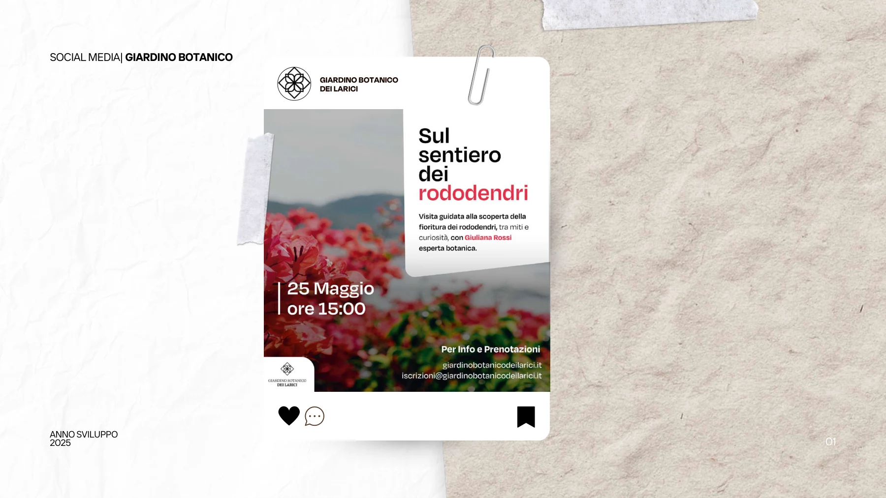
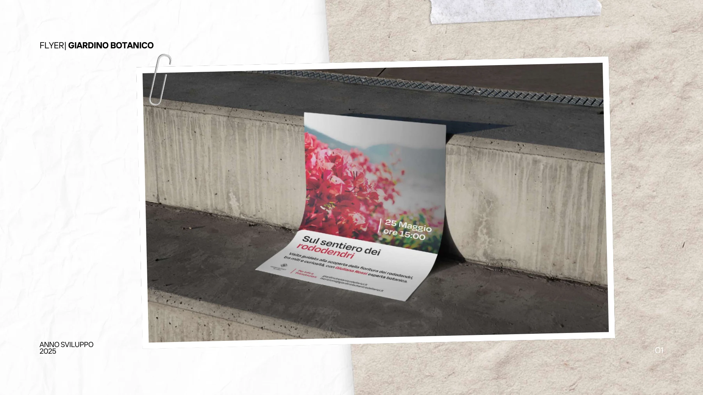
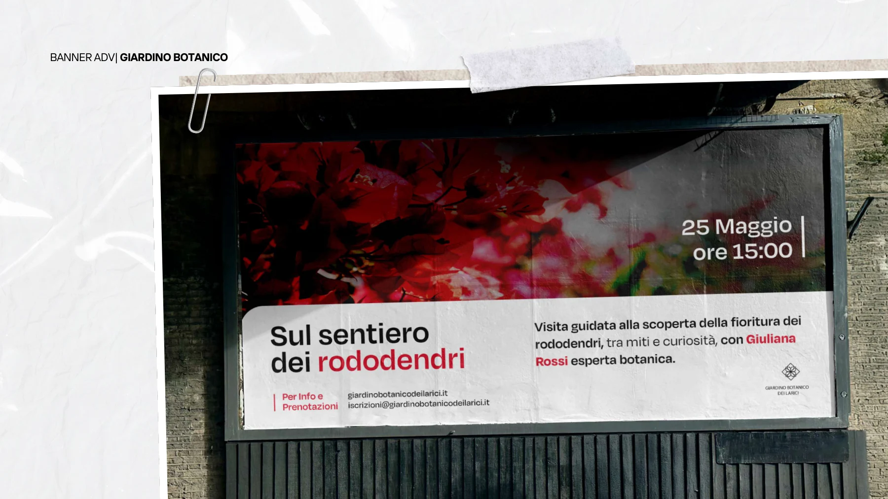

Giardino Botanico dei Larici
Una serie di applicazioni di comunicazione per il Giardino Botanico dei Larici.
Obiettivo
Il brief e gli obiettivi specifici non sono descritti nei materiali disponibili.
Attività documentate
Il portfolio presenta un post social, un flyer e un banner ADV. Non riporta informazioni dettagliate sul processo.



Progetto successivo